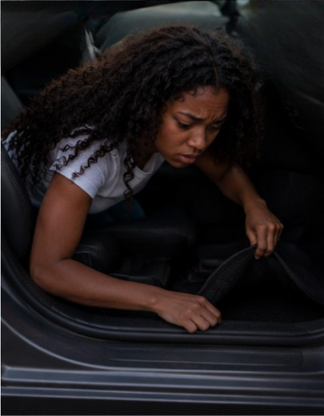

| The heat clung to Brooklyn as she slipped across the yard, moving fast but quiet, each step a careful whisper against the ground. Her curls bounced behind her in frantic little bursts, and even though she tried to steady her breathing, she couldn’t hide the sharp rise and fall of her chest. She’d run—really run —and now every inhale scraped at her throat like she’d swallowed fire. Brooklyn reached the car and eased the door open just enough to slide inside, shutting it with a soft click. Her hands shook as she searched—under the visor, between the seats, beneath the floor mat—hoping the keys would magically appear. They didn’t. And the whole time, one thought kept pounding through her head: the police are inside my house. Not outside. Not down the street. Inside. |
| Brooklyn pressed into the seat, trying to quiet her breath, but the air felt too thick, too heavy, like it was listening. The house loomed behind her, still and watchful, as if it knew she wasn’t supposed to be out there. Running wasn’t an option anymore. Staying in the car felt worse. Every second stretched thin, humming with tension, and the silence around her seemed to pulse with its own heartbeat. Her eyes drifted back to the front door she’d just escaped from, dread curling low in her stomach. Brooklyn’s only chance of getting out of the situation was going back inside… though the thought alone made her pulse spike, because stepping through that doorway again might be the moment everything she feared finally caught up to her. |
 |